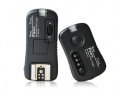

TF-361适用于佳能，具备了闪光灯引闪功能、影室灯引闪功能和无线快门控制功能。引闪最高同步速度可达1/320S，快门控制功能有：单拍、连拍或BULB、4秒延时拍摄功能。
官方资料里说引闪最高同步速度可达1/250S，怎么到了这里就变成了1/320S？ 最原始的引闪器！ 5D3在Live view模式下，不能引闪600EX-RT！
功能简单
最近一次大跌价，性价比就突出了，原来要260元一套，跌到140元一套还包邮，进了两发四收，很好用，没有测过80米远距离引闪，但20－30米是没有问题的，百发百中，可靠性不错，几乎没有漏闪的。 可以配合老佳能灯使用，如540EZ，手控。
做工好，外观精美，也很轻便。 可以用一个接收器，引发多台闪光灯（多灯都用连接线相连，一个灯触发，其他灯了一并触发）。 同步1/250，没有问题。 多功能，可以充当无线快门线，省了买快门线的钱。 引闪比较可靠。 可用七号电池，待机时间长。 两年质保，放心用。
发射器是钮扣电池，更换起来没有七号电池方便。 连续引闪容易故障，新买不久，试着连闪十来次（每秒2次），就爆掉了一个接收器，好在经销商给更换一个新的，可能是个例，再也不敢连闪了。